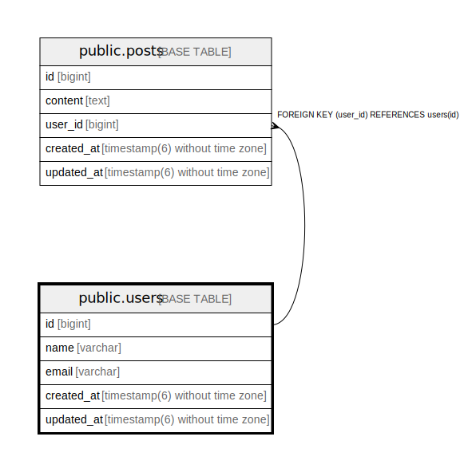

public.users
Description
Columns
| Name | Type | Default | Nullable | Children | Parents | Comment |
|---|---|---|---|---|---|---|
| id | bigint | nextval('users_id_seq'::regclass) | false | public.posts | ||
| name | varchar | true | ||||
| varchar | true | |||||
| created_at | timestamp(6) without time zone | false | ||||
| updated_at | timestamp(6) without time zone | false |
Constraints
| Name | Type | Definition |
|---|---|---|
| users_pkey | PRIMARY KEY | PRIMARY KEY (id) |
Indexes
| Name | Definition |
|---|---|
| users_pkey | CREATE UNIQUE INDEX users_pkey ON public.users USING btree (id) |
Relations

Generated by tbls